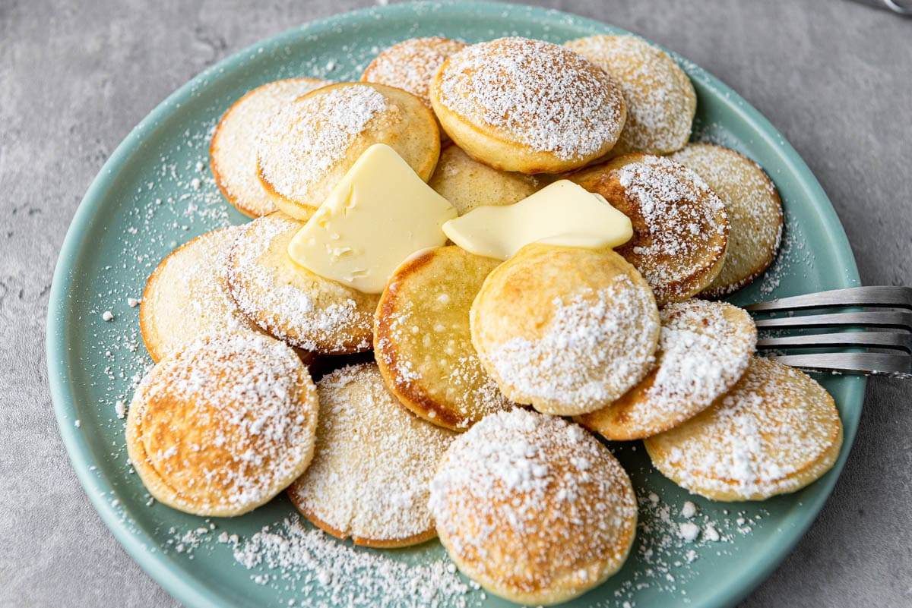

Poffertjes Recipe
Ingredients:
- 1 cup all-purpose flour
- 1 tablespoon granulated sugar
- 1/2 teaspoon active dry yeast
- 1/2 cup warm milk
- 1/4 teaspoon salt
- 1 large egg
- 1 tablespoon melted butter
- Butter or oil (for greasing)

How to make Poffertjes
-
In a small bowl, dissolve the yeast and sugar in warm milk. Let it sit for about 5 minutes until the mixture becomes frothy.
-
In a large mixing bowl, combine the flour and salt.
Create a well in the center and add the yeast mixture, egg, and melted butter.
Gradually whisk the ingredients together until you have a smooth batter. It should be thick but pourable.
Cover the bowl with a clean kitchen towel and let the batter rest for about 30 minutes to an hour. This allows the yeast to ferment and the batter to rise.
-
While the batter is resting, preheat your poffertjes pan on medium-low heat. If you don't have a poffertjes pan, you can use a small pancake pan with shallow round molds.
-
Once the pan is hot, lightly grease each mold with butter or oil. Use a brush or folded paper towel to distribute the grease evenly.
-
Fill a piping bag or a squeeze bottle with the rested batter.
Squeeze the batter into each mold, filling it up to about 3/4 full. The batter will spread slightly as it cooks, so leave some room for expansion.
-
Allow the poffertjes to cook on medium-low heat for a couple of minutes. They will start to form small bubbles on the surface.
-
Once the edges start to set and the bottom turns golden brown, use a skewer or a fork to flip each poffertje over.
-
Let the poffertjes cook for another minute or until the second side becomes golden brown.
-
Transfer the cooked poffertjes to a plate and continue greasing the pan and pouring the batter until all the batter is used.
-
Dust the poffertjes with powdered sugar and serve them warm. You can also add toppings like whipped cream, fresh fruits, or Nutella for extra flavor.
Enjoy!